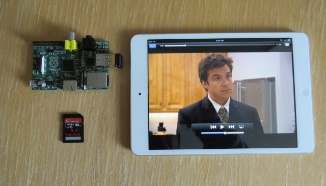

Raspberry Pi

Turning the Pi into a wireless access point
Prequel
check your wireless driver
lsusb.Bus 001 Device 002: ID 0424:9512 Standard Microsystems Corp. Bus 001 Device 001: ID 1d6b:0002 Linux Foundation 2.0 root hub Bus 001 Device 003: ID 0424:ec00 Standard Microsystems Corp. Bus 001 Device 004: ID 050d:2103 Belkin Components F7D2102 802.11n N300 Micro Wireless Adapter v3000 [Realtek RTL8192CU] Bus 001 Device 005: ID 05e3:0608 Genesys Logic, Inc. USB-2.0 4-Port HUB Bus 001 Device 006: ID 0bc2:a013 Seagate RSS LLCif you have a standard nl80211 driver you're fine; otherwise your need a specially built binary. You can build it from scratch or download a pre-built version.
pushd ~ && sudo wget http://dl.dropbox.com/u/1663660/hostapd/hostapd
Enable Port Forwarding
turn on port forwarding w/o having to reboot
sudo sysctl net.ipv4.ip_forward=1make port forwarding on by default
sudo nano /etc/sysctl.conf
turn on forwarding in the config file
net.ipv4.ip_forward=1
Create a hotspot
install the host access port deamon
sudo apt-get install hostapdsudo nano /etc/default/hostapd# create config file DAEMON_CONF="/etc/hostapd/hostapd.conf"if you have a RealTek then manually install the updated binary
sudo cp ~/hostapd /usr/sbin/hostapd sudo chmod 777 /usr/sbin/hostapd
Configure the hotspot
configure the hotspot. for now just use a open network for testing
sudo nano /etc/hostapd/hostapf.conf# create new config file interface=wlan0 # select the wireless device driver=rtl871xdrv # set the drive (normally the driver is "nl80211") bridge=br0 ctrl_interface=/var/run/hostapd # set location for the running process ctrl_interface_group=0 # params for the hostapd deamon
Configure the hotspot (continued)
# logging
logger_syslog=-1
logger_syslog_level=2
logger_stdout=-1
logger_stdout_level=2
dump_file=/tmp/hostapd.dump
ssid=pi-fi # wireless name
hw_mode=g # G network (N is configured elsewhere)
channel=1 # channel for the hotspot
macaddr_acl=0 # accept mac unless on the deny list
Setup the DHCP server
The DHCP server is responsible for assigning IPs to the devices that connect.
Install DNSMasq this program can handle DHCP, DNS and masquerading (routing between ips)
sudo apt-get install dnsmasqconfigure the dhcp server
sudo nano /etc/dnsmasq.confinterface=wlan0 # DHCP server listens only on wlan0 dhcp-range=10.0.0.3,10.0.0.120,255.0.0.0,120h # dhcp ip range, subnet mask and lease time
[Checkpoint] Hotspot Create and IP forwarding
Check to see if everything is working so far.
- Make sure everything is up.
sudo ifconfig wlan0 up
sudo service hostapd restart
sudo service dsnmasq restart
- try you device to see if it's connecting and validate it's getting a 10.0.0.x ip address.
- You'll be able to browse by IP address at this point
[Checkpoint] Hotspot Create and IP forwarding - Troubleshooting
- Troubleshooting.
install and check dhcpdump to see if clients are getting through the 4 stages make sure the wireless is up.
ifconfig and sudo ifconfig wlan0 up
Download DHCPdump http://bentis.calepin.co/handy-tools-for-debugging-dhcp-on-linux.html for further troubleshooting.
Routing
Sending internet and other data to remote devices.
- Turn off simple routing
sudo nano /etc/sysctl.conf
comment out the simple forwarding
#net.ipv4.ip_forward=1
Routing (continued)
Install a firewall/router
sudo apt-get install iptablesupdate the DHCP server
sudo nano /etc/dnsmasq.confdhcp-option=3,10.0.0.1 # set the routing
Routing (setup IP Tables)
- setup routing rules are startup
touch /etc/network/if-up.d/routing.sh
sudo nano /etc/network/if-up.d/routing.sh
iptables -F
iptables -X
iptables -A INPUT -i lo -j ACCEPT
iptables -A OUTPUT -o lo -j ACCEPT
iptables -A INPUT -i wlan0 -j ACCEPT
iptables -A OUTPUT -o wlan0 -j ACCEPT
iptables -A POSTROUTING -t nat -o eth0 -j MASQUERADE
iptables -A FORWARD -i wlan0 -j ACCEPT
allow the script the permissions to run
sudo chmod +x /etc/network/if-up.d/routing.sh
Why Did I do all this?
Wireless, Battery powered NAS

Other uses of the raspberry pi
XBMC - Use the default TV remote as a "keyboard"
GPIO (General Purpose Input and Output)
- connect sensors, motors, LEDs, etc to Raspberry Pi
Internet Radio
- $25 LCD w/ navigation control buttons
Web IO Pi
Webiopi http://code.google.com/p/webiopi/
- web interface to connect GPIO to Python server
- control via JavaScript
{kind=link}
Web IO Pi
camera
- $25 5MP Camera
Ziphius Robot
- aquatic robot built with raspberry pi and camera
http://www.kickstarter.com/projects/ziphius/ziphius-the-aquatic-drone?ref=live
What did use my Pi for?
1. Apartment hunter
Craigslist Apartment hunter - v1
- Had my Pi sitting in my hotel room and send me a SMS text when there was a new posting (with my criteria) on craiglist
- every minute reload the page.
- filter the page if any results match
- send a SMS with the price and link
Craigslist Apartment hunter - v1
but that was too much work for me… so i outsourced my wife
Craigslist Apartment hunter - v2
- when match found, navigate to the link
- capture HTML and email the entire posting w/ images to my wife
2. Bank Balance Pusher
Bank Balance Pusher
- when i get home I get an notified on my phone what my bank balance is
bottle - Python micro web server
- Super simple web server
-
from bottle import route, run, template @route('/hello/') def index(name='World'): return template('Hello {{name}}!', name=name) run(host='localhost', port=8080)
Get Bank balance
from ofxclient import Institution
inst = Institution(
id = '54324',
org = 'America First Credit Union',
url = 'https://ofx.americafirst.com',
username = '',
password = ''
)
accounts = inst.accounts()
for a in accounts:
download = a.download(days=5)
statement = a.statement(days=5)
print statement.balance
iPhone poller
- raspberry pi is my home wireless router
- iPhone app that runs in the background with hardcoded geofence for my house
- when i get home the iPhone sends a request to my Bottle server that get my bank balance and sends a local notification to my lock screen
take aways
- python connects everything together
- raspberry pi goes any where ssh to use any device
having a full blown computer to programming in Java, Ruby, Python and tie in embedded sensors and devices opens up a lot of possibilities
go to next page for little bits bonus
Bouns
Little Bits
- http://littlebits.cc
- Legos for electronics
- Built a lightbox out of legos, a page magnifier from Barnes and Noble and some little bits.